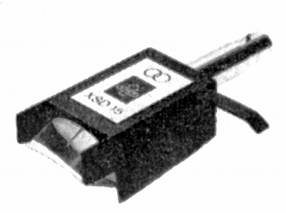

XSD-15

■価格 65,000円
■発電方式 MC型
■出力電圧 0.15mV±2dB
■針圧 2〜3g(最適
2.5g)
■再生周波数帯域 20-20,000Hz
■チャンネルセパレーション 25dB
■チャンネルバランス
■コンプライアンス 12×10-6cm/dyne
■直流抵抗
■負荷抵抗
■インピーダンス
■針先 15μ
■自重 17.6g
■交換針
■発売
1974〜75年頃
■販売終了 1991〜92年頃
■備考 価格は1975年頃のもの
1977年には69,000円
1979年には89,000円
1981年には95,000円
1984年には109,000円(針交換
40,000円)
1987年には139,000円(針交換 60,000円)
1993年には168,000円(針交換 スーパーファインライン
76,000円 円錐 69,000円)
ヨーロッパのプロ規格のコネクター採用のTSD-15の
コネクターを一般的なものに変更した機種。
前部にあるのはプラスチック製ルーペ。
1985年の資料から出力電圧 0.21mV±2dBとなっている。
1993年の資料では標準の針先がスーパーファインラインに変更されている。